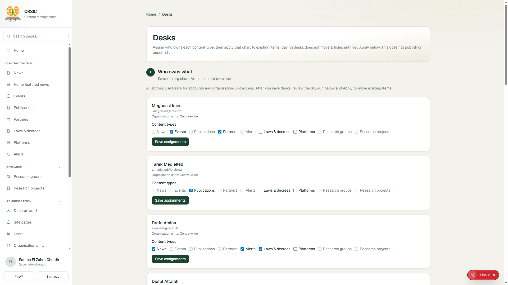
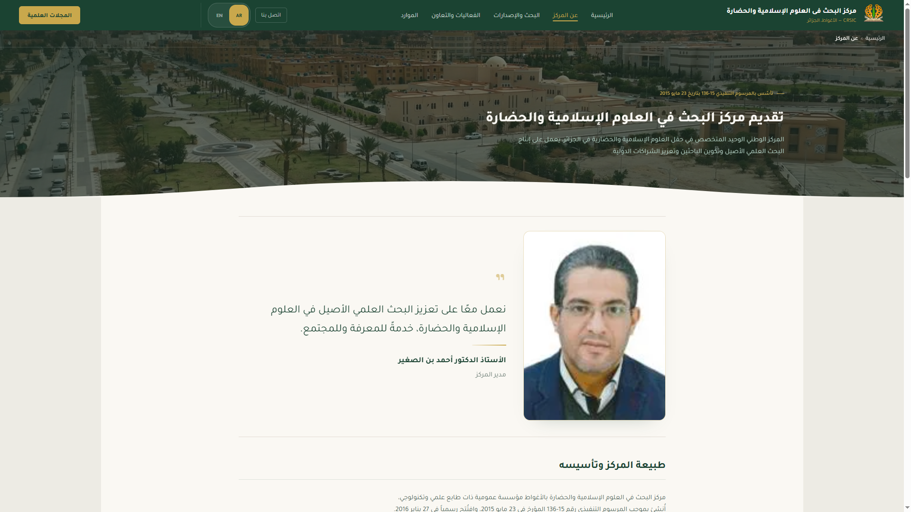

CRSIC 2026 · Digital presence
Institutional website & editorial desk
Factual briefing on systems in production: Arabic-first public SPA, internal editorial desk, publish governance, live inventory, safeguards, and remaining work — with screenshots from the running surfaces.


Contents
Briefing map
Eighteen slides. Navigate with arrows or Space. Switch language EN / ع at any time. Footer shows section name and position.



Institution
Why a digital presence exists
🏛️Public scientific centre
CRSIC is a public scientific and technological research centre under Algeria’s Ministry of Higher Education and Scientific Research. Founded by executive decree 15-136 (23 May 2015); opened January 2016 in Laghouat. The site is the primary public channel for research departments, publications, journals, events, partnerships, news, and contact.
🎯Public channel
- Present centre identity and ministry positioning
- Expose catalogues: news, events, publications, partners
- Link research groups/projects and institutional hubs
- Route journals to OJS; library to OPAC
🔐Controlled publishing
- Staff publish through roles and review queues
- No live WordPress or hand-edited production JSON
- Four-eyes on approve / publish
- Manual go-live only — no scheduled auto-publish

Transition
What changed in practice
Owned content types have already cut over from WordPress. Journals remain on Open Journal Systems by design and are linked, not authored, in the desk.
WordPress + informal edits
- Unclear ownership of who could change live pages
- Risk of direct production edits without review
- Harder to attribute who published what, when
- Public runtime tied to a heavier CMS stack
- No exclusive desks by content type or org unit
Static public site + editorial desk
- Desks assign exclusive ownership by type / org unit
- Draft → submit → review → manual publish
- Author cannot approve their own item (four-eyes)
- Visitors load static pages; desk writes approved snapshots
- Audit log and recycle instead of opaque hard deletes
Public site · home
First screen, section by section
1 · Hero
Looping video, centre positioning under the ministry, CTAs to publications and about.
2 · Stats strip
Founding year, researchers, departments, publications — each deep-links into a site section.
3 · Research departments
Four cards into #research tabs r1–r4 with department names and entry points.
4 · Latest publications
Cover grid on desktop; horizontal scroll-snap on phone for the same strip.
5–7 · News & events
Featured playlist (max 10), Center News 3-per-page autoplay carousel, 3 newest events teaser.

Public site · catalogues
Browse, filter, open detail

Detail routes
- #news/{slug}
- #publication/{slug}
- #event/{slug}
- #partner/{slug}
- #research-group/{slug}
- #law/{slug} · #platform/{slug}
Each detail updates document title and social meta for that item. Soft-fail keeps sibling catalogues usable if one JSON payload fails.
Language policy
Arabic-first, English when ready
🌐Interface (chrome)
- Default: Arabic, dir=rtl, lang=ar
- English flips UI chrome to LTR
- Preference via ?lang= and localStorage.crsic_lang
- 350 keys in ar.json and en.json — key sets must stay in sync
- Optional banner if browser prefers EN or FR
- Desk chrome: AR RTL / EN LTR via cms_lang cookie
📝Editorial bodies
- Arabic is the publish baseline for every owned type
- EN title/summary/body show publicly only when en_status = ready
- Per-field fallback to Arabic if an EN field is missing
- Desk tracks “English pending” separately from publish status
- EN bodies of editorial content may remain Arabic-only until marked ready
- Journals remain Arabic / OJS-linked outside this policy
Inventory
What is already public
Approximate counts from public JSON after WordPress cutover of owned types. Bars are relative to the largest catalogue (events = 55).
Relative catalogue size
| Resource | Count | Detail |
|---|---|---|
| Events breakdown | 14 + 41 | International + national |
| Research groups / projects | 8 / 1 | Four research departments |
| Laws / platforms | 3 / 3 | Hubs with slug details |
| Journals | 4 | All link to crsic.dz/ojsre/ (OJS) |
| UI locale keys | 350 × 2 | AR + EN matched key sets |
| Featured playlist | 0–10 | Empty → fallback 3 newest news |
Editorial desk · workflow
How an item becomes public
Statuses: draft → submitted → approved → published. Side paths: changes_requested, rejected, unpublished. Publish is always a deliberate human action.
Draft
Editor on assigned types; Arabic required; media upload; EN optional
Submit
Enters review queue; withdraw possible before approval
Decide
Request changes / approve / reject — author cannot self-approve
Publish
Manual only; rebuilds public JSON; revision keeps live copy
Live-safe revision
“Create revision (public stays live)” returns a published item to draft while live_payload remains until the next publish. Visitors keep seeing the previous approved snapshot.
Emergency path
Super Admin may emergency-publish with audit trail and post-review flag — exceptional, not routine, and still recorded.
Editorial desk · interface
Queues and lists in daily use
Dashboard aggregates drafts, awaiting review, published, and English-pending. Type lists support status filters, EN readiness, header sort (this visit), duplicate, and bulk select.
Safeguards
Controls in force
🛡️ Access & integrity
- Encrypted iron-session cookies; Secure in production; SameSite=lax
- Password hashing (bcrypt); SESSION_SECRET ≥ 32 chars
- 30-minute idle timeout with activity touch
- Role + org + content-type checks on every action
- Four-eyes on review/publish; deactivated users cannot log in
- Public site: no login surface; DOM built without raw innerHTML for content
📋 Release & recovery
- Written product decision (PRD) before feature coding
- ~5 minute smoke checklist before merge to live line
- Publish rebuild with .bak / temp / rename; rollback on failure
- Recycle instead of hard delete; media DELETE blocked if still referenced
- Import never lands as published
- WordPress cutover for owned types already applied on main
Open items & closing
Remaining work and position today
WebP + remaining EN-when-ready
Faster image delivery; English visibility for remaining types when marked ready. Does not block Arabic publication.
Journals inside the desk
Remain on OJS. No desk journals work unless a new written decision opens that slice.
Scheduled auto-publish
Cancelled. Rule remains Approve → Publish by a human.
Possible extensions
Visitor statistics, translator role, staff SSO — only if prioritised as a new decision.
In place
Public site · desk · cutover · inventory · audit · featured playlist · recycle · I/E · desks · four-eyes
Under way
WebP delivery · remaining English-when-ready coverage
Next choice
Whether any new slice is opened beyond the current pack